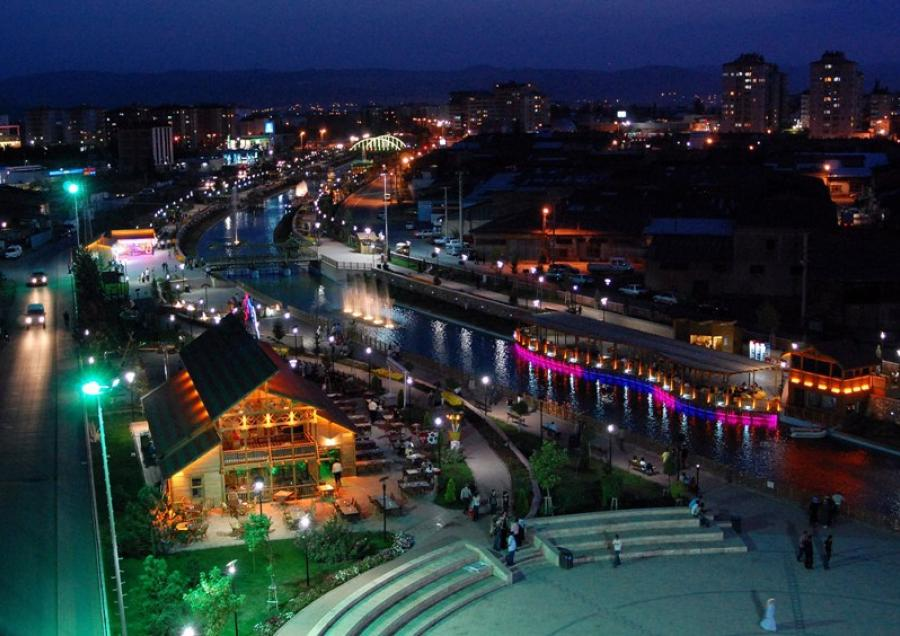
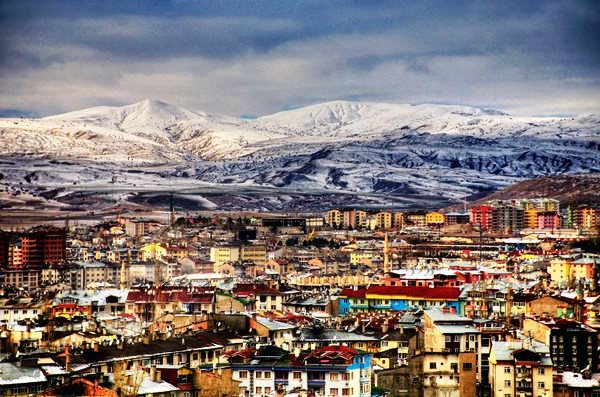

YÜZÖLÇÜMÜ: 28.488 km²
İL TRAFİK NO: 58
Sivas İç Anadolu'nun doğusunda yer alan, Anadolu'daki tarihi İpek Yolu güzergahlarının kesiştiği bir yerde konumlanmış ve ünlü Kral Yolunun da geçtiği büyük bir ilimizdir. Sivas tarihi zenginlikleri, doğal güzellikleri, kaplıcaları ile turistlere ilginç tatil olanakları sunmaktadır.
İç Anadolu'nun yüksek platoları üzerinde başlayan ve doğuya doğru yükselen il alanı; kuzey, doğu ve güneydoğuda dağlık ve sarp bir kesimle son bulmaktadır. Ortalama yükselti 1000 metrenin üzerindedir. İlde Kuzey Anadolu sıradağlarının uzantısı olan Köse Dağları, Torosların kuzey kollarından Tecer Dağları ve İncebel Dağları, Akdağlar, Yama Dağı yer almaktadır. Uzunyayla ve Meraküm platoları, ayrıca Kızılırmak, Kelkit, Çaltı vadileri önemli coğrafi oluşumlardır. Önemli akarsuları Kızılırmak, Kelkit Çayı, Tozanlı Çayı, Çaltı Çayı ve Tohma Çayıdır.
Sivas ilinin büyük bir kesimi yazları sıcak ve kurak, kışları soğuk ve karlı geçen karasal İç Anadolu ikliminin etkisinde kalmaktadır.


Yazılı Tarih Öncesi: 1927' den bu yana süregelen kazı ve araştırmalarda saptanan bulgular, Sivas'ta Neolitik Dönem'den başlayarak yerleşildiği yolundaki savları güçlendirici niteliktedir. Bölgede Kalkolitik Dönem (M.Ö. 5000-3000) ve ilk Tunç Çağ (M.Ö. 3000-2000) yerleşmelerinin varlığı ise, bu dönemlerden kalma çanak-çömlek, ev ve kent kalıntılarıyla kesin olarak saptanmıştır. Maltepe Höyüğü kazıları, yörede ilk yerleşmenin M.Ö. 2600'lerde başlayıp M.Ö. 2000'lere kadar kesintisiz sürdüğünü göstermektedir.
Yazılı Tarih: Sivas'ın eski bir yerleşim yeri olmasına rağmen ne zaman ve kimler tarafından kurulduğuna dair kesin bilgiler mevcut değildir. Bugün şehir merkezi ilçe ve köylerinde yapılan çeşitli Arkeolojik kazı ve araştırmalarda edinilen bilgiler bulunan höyük ve eski şehir harabeleri, Sivas'taki yerleşimin tarihin ilk dönemlerinden itibaren başladığını göstermektedir. Bu dönemlere ait, yeterli aydınlatıcı araştırmalar yapılmamış olduğundan Sivas'ın tarihini, Anadolu'nun büyük bir bölümünü kapsayan Kapadokya tarihi içerisinde incelemek zorunluluğu ortaya çıkmaktadır.
Sivas Çevre illere göre kendine has bir iklim karakterine sahiptir.
Çevresine göre bir mikroklima iklim bölgesindedir. Bu özelliği sağlayan temel faktörler şunlardır.
a) Çevre illere göre daha yüksek oluşu.
b) Kuzey rüzgarlarına açık oluşu.
c) Engebeli bir yapıya sahip oluşu.
ç) Yıl içinde değişen basınç farkı.
d) İl topraklarının farklı coğrafi bölgelerde yer alması.
Sivas’ta aralarında küçük farklar olmakla birlikte ana hatlarıyla karasal iklim görülür. Yazları çok sıcak ve kurak olup, yaz mevsimi oldukça kısadır. Kış ayları ise soğuk, uzun ve kar yağışlıdır.
Sıcaklık: Sivas İç Anadolu Bölgesi’nin en soğuk ilidir. Kış ayları dondurucu soğuk olup, kış ortalama sıcaklığı 0 C civarındadır. En soğuk ay ortalaması -4C olup, zaman zaman -36.4 C ‘ye düştüğü görülmüştür. Yaz aylarında sıcaklık genellikle 19 C üzerindedir. Ancak sıcaklığın 38C’yi aştığı görülür. Buradan da anlaşılabileceği gibi yıllık sıcaklık farkı 74 C gibi büyük bir fark gösterir.
Sıcaklık değerlerinin 0 C altında düştüğü gün sayısı ortalama 132 gündür.